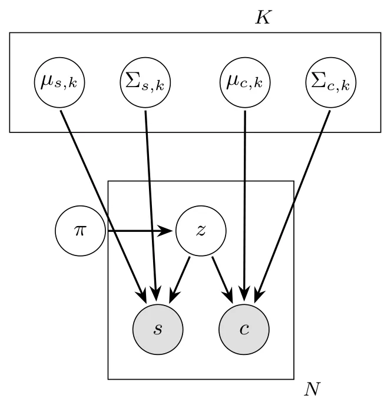
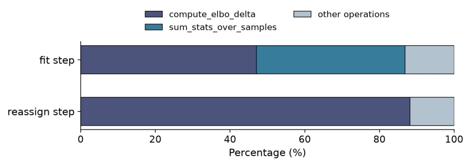
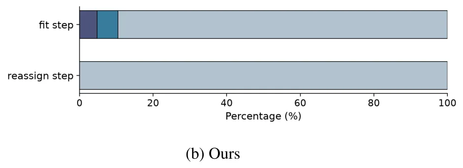
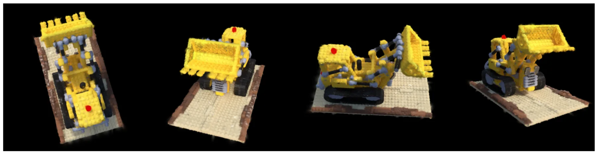
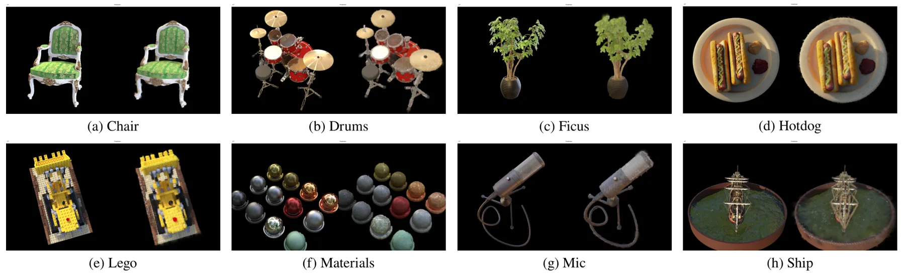
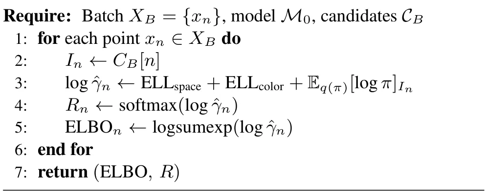
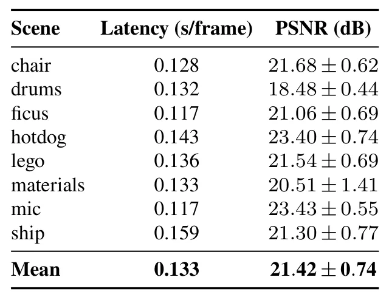
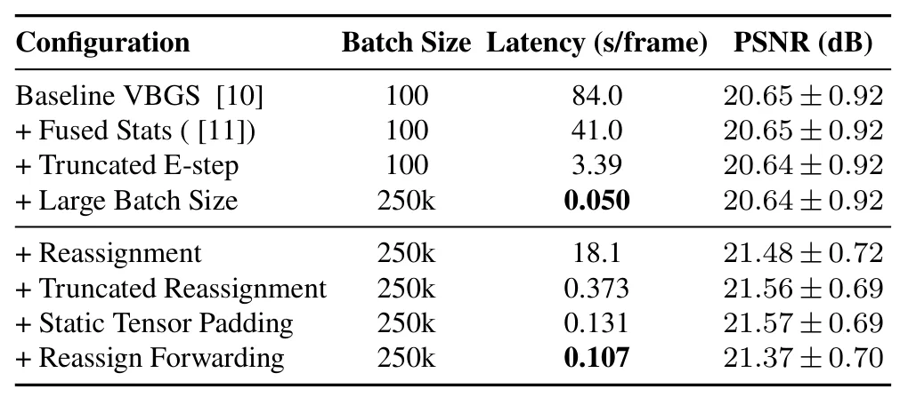

ImprovedVBGS：实时持续变分贝叶斯 Gaussian SplattingImprovedVBGS: Real-time Continual Variational Bayes Gaussian Splatting
直接面向机器人在线持续重建，速度提升幅度突出且提供代码；技术报告仅 5 页，需核查真实序列、显存上界、长期地图稳定性和质量指标。
一句话工作总结
用局部截断推断和更高效的 Gaussian 重分配，把 VBGS 持续重建推进到约 20 FPS。
摘要
VBGS 通过坐标上升变分推断实现无需回放缓冲区的持续重建，但逐帧遍历全部已观测点带来严重延迟。ImprovedVBGS 引入空间截断变分推断，并通过 forwarding、truncation 和避免无效动态重编译改进基元重分配。在 RTX 3070 Ti 和 NeRF Synthetic 数据集上，平均每帧延迟由约 84 秒降至 0.050 秒，达到 1680 倍加速，同时保持重建质量。
On-the-fly reconstruction is a key requirement for many applications in robotics and autonomous navigation. Variational Bayes Gaussian Splatting (VBGS) enables continual learning without replay buffers using Coordinate Ascent Variational Inference (CAVI), but its per-frame iterations over all observed points make it too slow for real-time use with strict memory and latency requirements. We present ImprovedVBGS, an accelerated framework for on-the-fly continual reconstruction. This is achieved primarily through (i) spatially truncated variational inference, and (ii) improved reassignment that uses forwarding, truncation and eliminates wasteful dynamic recompilation. On the NeRF synthetic dataset, we reduce mean per-frame latency from ~84.0 s to ~0.050 s on an RTX 3070 Ti, a 1680x speed-up while maintaining reconstruction quality.
中文解读摘录
- 链接：arXiv 2607.15542 · 代码
- 核心贡献：通过空间截断变分推断和更高效的 Gaussian 重分配，把 VBGS 平均延迟由约 84.0 秒/帧降到 0.050 秒/帧，报告 1680 倍加速且保持重建质量。
- 为什么重要：直接针对机器人在线、持续、有限内存重建的主要瓶颈，约 20 FPS 的结果具有工程吸引力。
- 待核查：报告只有 5 页；需验证真实机器人序列、长期运行的基元数量/显存上界、动态场景与几何精度。
图表/页面预览
{kind=link}

{kind=link}

{kind=link}

{kind=link}

{kind=link}

{kind=link}

{kind=link}

{kind=link}
